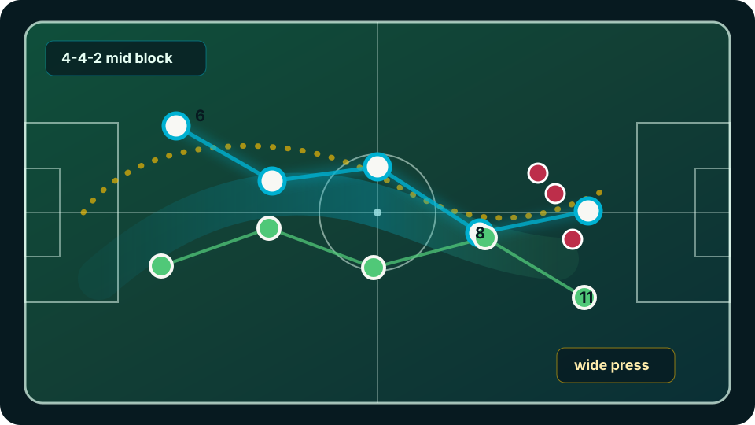

MATCH TL-2026-0505
Library / Upload
new analysis
경기 업로드
이행 점수
76
압박 성공
61%
검수 필요
14
최근 경기
| 경기 | 상대 | 상태 | 점수 | 검수 |
|---|---|---|---|---|
| Round 12 | Suwon U18 | Ready | 76 | 14 |
| Round 11 | Incheon U18 | Reviewed | 82 | 0 |
| Friendly | Daejeon U18 | Queue | - | 6 |
전술 원칙
- Build-up후방 3-2 구조 유지센터백 벌림 + 6번 하강
- Press측면 패스 유도 후 1차 압박윙어 방향 제한 + 8번 전진
- Rest defense볼 상실 전 2+3 안정성반대 풀백 높이 조절
processing
영상 처리 대기열
72% complete
11:28
Round 12 · FC Seoul U18 vs Suwon U18
- Ingest원본 확인
- Transcode프록시 생성
- Field Calibration피치 좌표 보정
- Tracking선수/공 추적
- Tactical Inference전술 원칙 매칭
- Report Build클립 묶음 생성
품질 진단
검수 예정피치 보정0.91
대상 팀 분류0.86
공 추적0.74
장면 전환18
- 42:18 카메라 줌 구간 추적 확신도 하락
- 58:04 측면 압박 후보 클립 생성
- 71:36 수비 라인 보정 필요
analysis workspace
Round 12 · 4-4-2 압박 리뷰

42:18
Wide press trigger
AI 0.82
human review needed
전술 타임라인
Build-up
Press
Review
team playbook
전술 원칙 편집
측면 압박 트리거
공 위치wide third
윙어 거리< 6m
8번 전진< 2.5s
후방 3-2 빌드업
6번 하강center lane
풀백 위치asymmetric
센터백 폭> 32m
execution report
코칭스태프 리포트
전반 20분까지 압박 방향 제한이 안정적입니다.
상대 풀백 터치라인 유도 후 2차 압박 연결 장면이 7회 반복됐습니다.
반대 풀백의 rest defense 위치가 늦습니다.
볼 상실 직전 2+3 구조가 깨진 장면 5개를 선수 미팅 클립으로 묶었습니다.